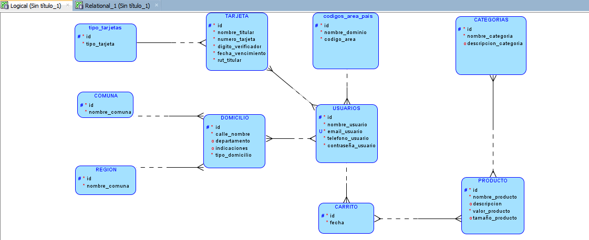
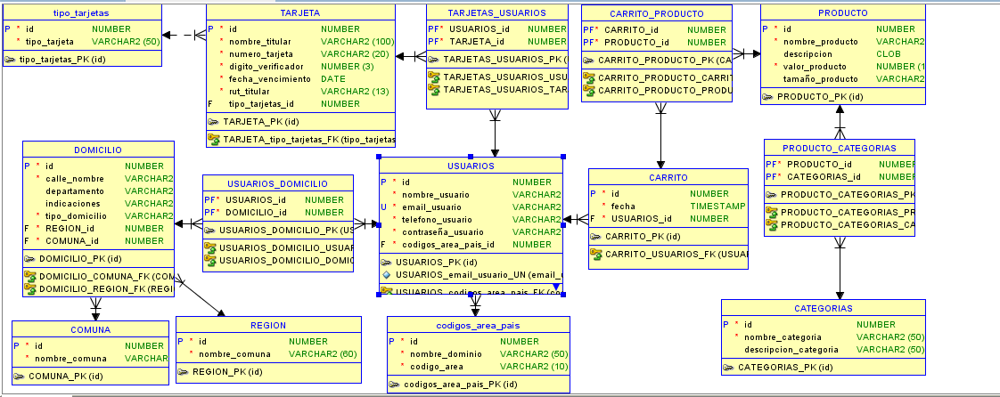
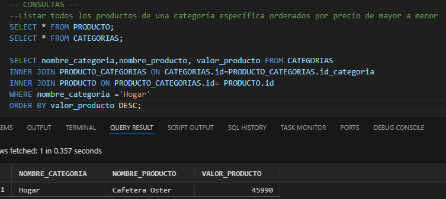
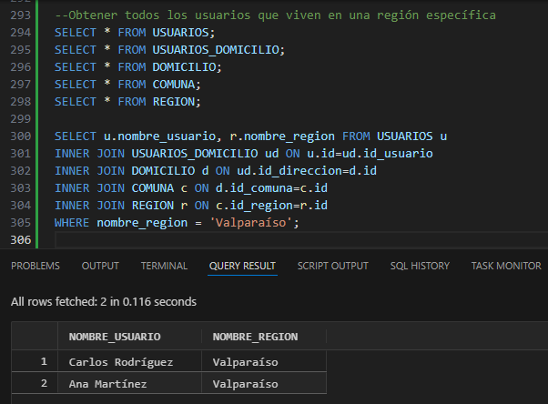
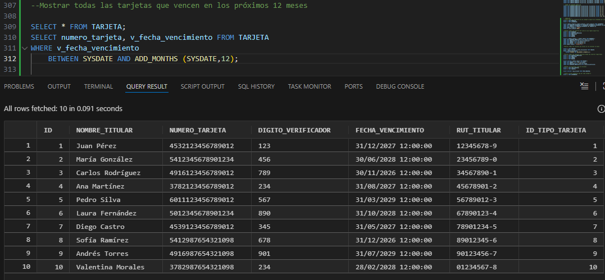
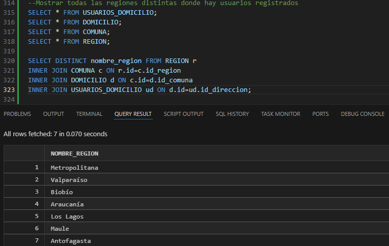
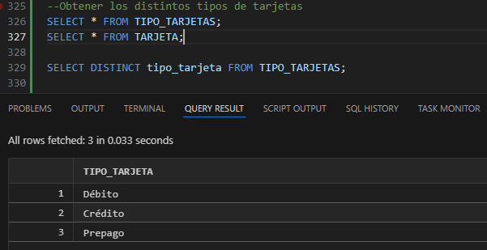
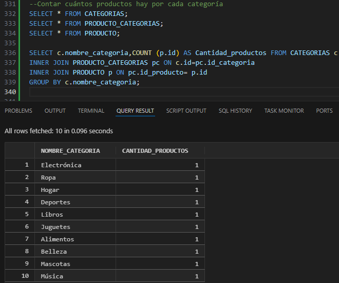
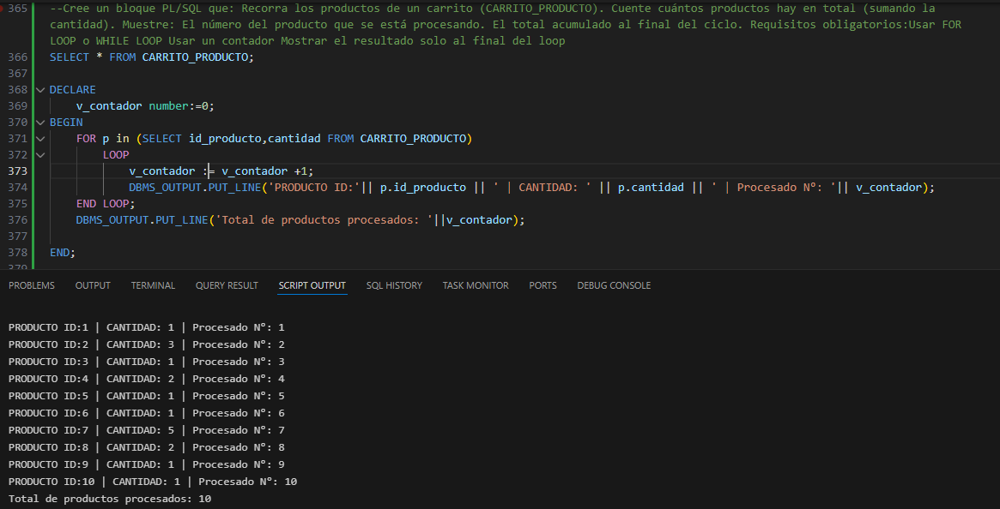

Sistema de Comercio Electrónico
Proyecto Base de Datos
Diseño, modelado e implementación de una base de datos relacional
utilizando SQL y PL/SQL.
Alumno: RAÚL ROA
Asignatura: TALLER DE BASE DE DATOS
Modelo: MercadoLibre
Contexto del Proyecto
El proyecto simula el funcionamiento del sistema de ecommerce de la base de datos de MercadoLibre,
donde se gestionan usuarios, productos, categorías, direcciones y pagos.
- Gestión de usuarios y domicilios
- Organización de productos por categorías
- Carrito de compras
- Pagos con tarjetas
Objetivos
Objetivo general:
Diseñar una base de datos normalizada y funcional que permita soportar
el sistema de comercio que utiliza MercadoLibre.
Objetivos específicos:
- Aplicar normalización
- Diseñar relaciones entre entidades
- Implementar consultas SQL
- Utilizar PL/SQL para lógica de negocio
Modelo Conceptual
El modelo conceptual representa las entidades principales del sistema
y cómo se relacionan entre sí.
- Usuarios
- Productos
- Categorías
- Carrito
- Tarjetas
- Domicilios
Este modelo permite entender el negocio antes de pasar a la implementación.
Modelo Conceptual
Este diagrama representa las entidades principales del sistema y
sus relaciones, permitiendo comprender el negocio antes de
implementar la base de datos.

Modelo Lógico
En el modelo lógico se definen las tablas, claves primarias y foráneas.
- Separación de datos para evitar redundancia
- Uso de tablas intermedias para relaciones N:M
- Integridad referencial
Modelo Lógico
En el modelo lógico se definen las tablas, claves primarias,
claves foráneas y relaciones entre tablas.

Normalización
- Primera Forma Normal (1FN): atributos atómicos
- Segunda Forma Normal (2FN): dependencia total
- Tercera Forma Normal (3FN): sin dependencias transitivas
Esto evita inconsistencias y problemas de actualización.
Consultas SQL
Se desarrollaron consultas para obtener información relevante del sistema:
- Usuarios con sus domicilios
- Productos por categoría
- Contenido del carrito
- Validaciones de datos
Consulta SQL 1
SELECT / INNER JOIN / ORDER BY / WHERE

Consulta SQL 2
SELECT/ INNER JOIN / WHERE

Consulta SQL 3
SELECT/ WHERE / BETWEEN

Consulta SQL 4
SELECT/ DISTINCT / INNER JOIN

Consulta SQL 5
SELECT/ DISTINCT

Consulta SQL 6
SELECT/ COUNT/ INNER JOIN/ GROUP BY

Uso de PL/SQL
PL/SQL permite implementar lógica que no puede resolverse solo con SQL.
- IF / ELSE para validaciones
- LOOP para recorrer datos
- RECORD para manejar información estructurada
- VARRAY para almacenar listas en memoria
Bloque PL/SQL 2
LOOP/ FOR

Ejemplo: RECORD
El RECORD se utiliza para almacenar distintos datos relacionados
en una sola estructura, similar a una fila de una tabla.
- Permite agrupar múltiples campos (nombre, email, región, etc.)
- Se define usando
TYPE ... IS RECORD
- Se accede a cada campo con notación punto (
registro.campo)
- Ideal para manejar resultados de
SELECT ... INTO
Ejemplo: VARRAY
El VARRAY se utiliza para almacenar un conjunto limitado de valores,
como una lista de categorías.
.EXTEND reserva espacio- Índices comienzan en 1
- Datos se manejan en memoria
Conclusiones
- Diseño correcto de base de datos es clave
- La normalización mejora la consistencia
- PL/SQL permite automatizar reglas del negocio
- El sistema es escalable y realista